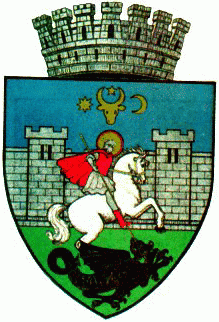
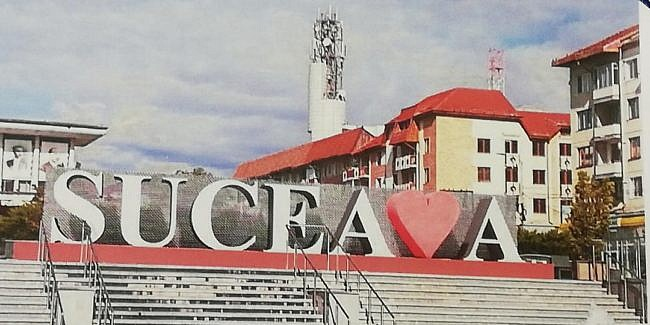
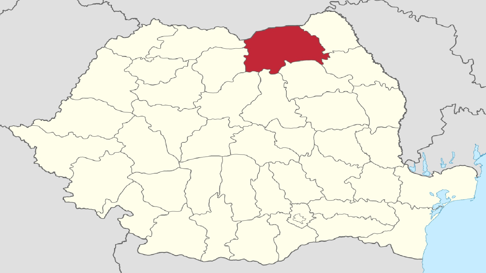

Suceava

Logoul municipiului Suceava

Scurta prezentare
- Municipiul Suceava se numără printre cele mai vechi și mai importante așezări ale țării.
- În secolul al XX-lea, orașul se extinde prin înglobarea localităților limitrofe Burdujeni și Ițcani, devenite cartiere.
- În perioada comunistă, are loc un amplu proces de industrializare a Sucevei, a cărei populație crește de peste zece ori.
- Suceava a primit rangul de municipiu în anul 1968.
- La recensământul din 2011, avea o populație de 92.121 de locuitori, fiind al 23-lea cel mai mare centru urban al României.
- Suceava se intinde pe 52.1 km².